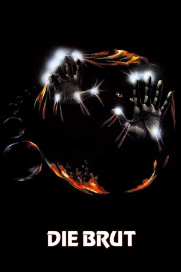
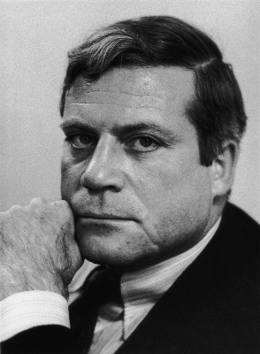
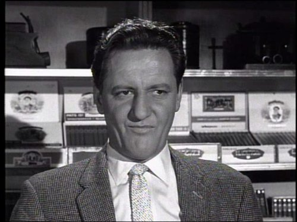
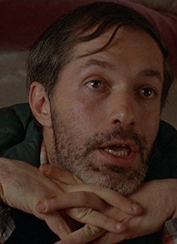
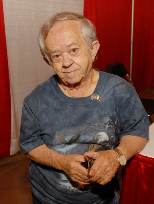
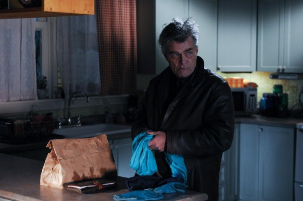

#7186 Die Brut
 
 IMDB-Wertung: 6.9 / 10
IMDB-Wertung: 6.9 / 10  Metascore: 0
Metascore: 0 
Nola und Frank Carveth sind ein unglückliches Ehepaar und ihre Scheidung scheint nahe. Um das zu vermeiden, unterzieht sich Nola einer Therapie im umstrittenen Institut von Dr.Raglan bei der sie ihre Agressionen sichtbar machen soll. Das funktioniert allerdings besser als erwartet, denn wann immer nun Nola einen Haß auf eine Person verspürt, erscheinen kleinwüchsige Lebensformen und "beseitigen" das Problem. Als schon einige Leute ihr Leben verloren haben, darunter auch Nolas Eltern, kommt Frank der Sache schließlich auf die Spur und gerät so bald selbst in Gefahr...
Jahr: 1979
Dauer: 92 Minuten
FSK: 16
Land: Kanada Studio: CineVox FilmverleihTonspuren: DD5.1 - ,
Untertitel:
Auflösung: 1080p (1920x1080) Größe: 6410 MB
Genre: Horror, Sci-Fi
Regisseur:  David Cronenberg
David Cronenberg
Drehbuch: David Cronenberg
Soundtrack: Howard Shore
Darsteller:
-  Oliver Reed als Dr. Hal Raglan
 Samantha Eggar als Nola Carveth
Samantha Eggar als Nola Carveth Art Hindle als Frank Carveth
Art Hindle als Frank Carveth-  Henry Beckman als Barton Kelly
- Nuala Fitzgerald als Juliana Kelly
- Cindy Hinds als Candice Carveth
 Susan Hogan als Ruth Mayer
Susan Hogan als Ruth Mayer- Gary McKeehan als Mike Trellan
-  Robert A. Silverman als Jan Hartog
-  Felix Silla als Creature
-  Nicholas Campbell als Chris
 Chris Britton als Man in Auditorium
Chris Britton als Man in Auditorium- Michael Magee als Inspector
- Joseph Shaw als Coroner
- Larry Solway als Lawyer
- Reiner Schwarz als Dr. Birkin
- John Ferguson als Creature
- Mary Swinton als Wendy
- Jerry Kostur als Construction Worker
- Elijah Siegler als Samson (uncredited)
Datei: X:\1979\Brut, Die (1979, FSK16, 1920x1080).mkv seit 04.10.2017
Festplatte: HD 1971-1979
 Es gibt insgesamt 29 Filme in der Gruppe '1979'
Es gibt insgesamt 29 Filme in der Gruppe '1979'